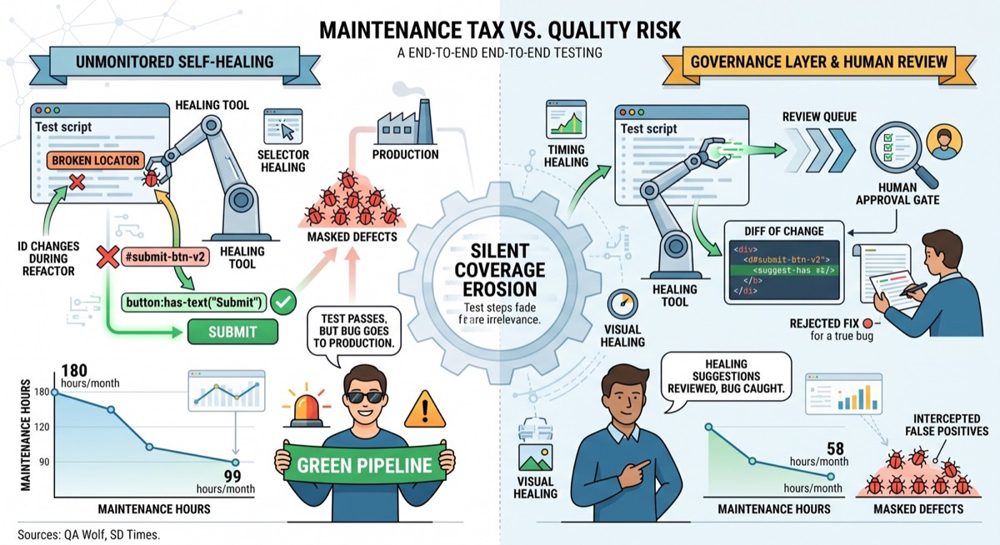

Samoispravljajući testovi: šta zaista rješavaju, a šta tiho pokvare
Alati za samoispravljanje testova automatski krpe pokvarene selektore, ali mogu i sakriti baš one greške koje vaš skup testova treba da uhvati. Evo kako ih koristiti na siguran način.
id dugmeta se promijeni tokom rutinskog refaktorisanja, desetak end-to-end testova pocrveni, i neko u timu provede popodne mijenjajući selektore koji nemaju nikakve veze sa funkcionalnošću koja se zapravo testira. To je "porez na održavanje" koji alati za "samoispravljanje" (self-healing) testova obećavaju da će ukinuti: kad se lokator pokvari, alat pronađe element na neki drugi način i test nastavlja da radi. To zaista štedi vrijeme, ali mijenja i šta prolazak testa uopšte znači, a tu promjenu je lako previdjeti dok vas ne košta produkcionog incidenta.
Šta alati za samoispravljanje zapravo rade
"Self-healing" nije jedna tehnika. Većina alata na tržištu kombinuje nekoliko užih mehanizama, od kojih je svaki usmjeren na drugu vrstu kvara:
- Ispravljanje selektora – kad se DOM promijeni, alat upoređuje strukturu stranice i bira novi lokator (drugi atribut, obližnji sidreni element, izmijenjen tekst) umjesto da odmah padne.
- Ispravljanje tajminga – umjesto fiksnog
wait(2000), alat prati mrežne pozive i DOM promjene i čeka da se stranica zaista smiri. - Ispravljanje podataka – istekle sesije, zastarjeli tokeni ili neažurni fixture-i se automatski osvježe prije nego što test padne zbog nečega što nema veze sa funkcionalnošću koja se testira.
- Vizuelno ispravljanje i ispravljanje interakcije – poređenje prikazanog rezultata uz ignorisanje nebitnog piksel-šuma, ili ubacivanje koraka koji nedostaje (npr. otvaranje skupljenog menija) koji originalna skripta nije predvidjela.
Promjene selektora dobijaju najviše pažnje jer su najvidljiviji tip kvara, ali u praksi čine manjinu ukupnih kvarova testova — pregledi iz industrije, od dobavljača u ovoj oblasti, procjenjuju da kvarovi vezani za selektore čine manje od trećine svih nestabilnih ili pokvarenih pokretanja, dok problemi s tajmingom čine sličan ili veći udio. To je bitno, jer alat koji ispravlja samo selektore rješava manji dio vašeg problema s održavanjem nego što marketing sugeriše.
Evo pojednostavljenog primjera kako "ispravljajuća" (healing) strategija za lokatore izgleda u praksi, korišćenjem lanca rezervnih opcija umjesto jednog krhkog selektora:
// Instead of a single point of failure:
await page.locator('#submit-btn-v2').click();
// A resilient (and healable) approach tries multiple signals:
const submitButton = page.locator(
'#submit-btn-v2, [data-testid="submit"], button:has-text("Submit")'
);
await submitButton.first().click();Alat za samoispravljanje automatizuje proces pronalaženja te druge ili treće opcije nakon što prva otkaže, a zatim — zavisno od alata — ili sam izmijeni skriptu testa ili samo zabilježi da je do ispravljanja došlo i nastavi dalje.
Dio koji dobavljači ne ističu
Rizik nije u tome što alati za samoispravljanje povremeno pogriješe. Rizik je u tome što ne mogu da razlikuju "dugme se pomjerilo zbog bezopasnog refaktorisanja" od "dugme se pomjerilo jer je neko ubacio bug". Oba slučaja izgledaju identično algoritmu za poklapanje lokatora: očekivani element nije tamo gdje test očekuje. Ako je posao alata da test ostane zelen, on će podjednako rado prekriti oba slučaja — jedan tim koji istražuje ovaj problem to je nazvao "tihim erozijom pokrivenosti" (silent coverage erosion).
Studija slučaja fokusirana na upravljanje (governance), koja pokriva otprilike godinu dana produkcione upotrebe u jednoj finansijskoj kompaniji, konkretno ilustruje taj kompromis. Statički skup testova bez samoispravljanja koštao je oko 180 sati održavanja mjesečno, a i dalje je propustio 12 grešaka neotkriveno. Uključivanje samoispravljanja bez ikakvog nadzora smanjilo je održavanje na oko 99 sati mjesečno, ali se broj prikrivenih grešaka otprilike učetvorostručio u poređenju sa statičkim skupom. Dodavanje sloja upravljanja — kapija za ljudski pregled promjena koje dotiču kritične tokove, i obavezan zapis svakog prihvaćenog ili odbijenog automatskog ispravka — spustilo je održavanje na oko 58 sati mjesečno, uz presretanje velike većine lažnih pozitivnih rezultata prije nego što bi stigli do produkcije.

Pouka nije "nemojte koristiti samoispravljanje", nego da nenadgledano samoispravljanje mijenja vidljiv posao održavanja za nevidljiv kvalitetni rizik, a ta nevidljiva vrsta je mnogo skuplja kad izađe na vidjelo.
Zamke i ograničenja
Alati za samoispravljanje testova nisu zamjena za dobru higijenu lokatora, i imaju stvarna ograničenja koja vrijedi znati prije nego što ih usvojite:
Rješavaju samo simptome koje vaš skup testova već proizvodi. Ako vaši testovi ranije nisu pokrivali neki tok, samoispravljanje neće dodati pokrivenost — samo će produžiti život postojećoj, možda tankoj, pokrivenosti bez održavanja.
Najviše se muče baš tamo gdje je to najbitnije: u regulisanim ili visokorizičnim tokovima (plaćanja, promjene naloga, koraci osjetljivi na usklađenost), automatski "ispravljen" test koji tiho prestane da provjerava pravu stvar gori je od testa koji glasno padne, jer niko ne istražuje zelen pipeline.
Mogu stvoriti lažan osjećaj sigurnosti oko nestabilnosti. Test koji i dalje prolazi zato što alat stalno pronalazi nešto za klik nije nužno više testirao pravu stvar — možda klikće na pogrešan element koji je i sam slučajno klikljiv.
Zahtijevaju reviziju, ne samo usvajanje. Većina timova koji na ovome nastradaju preskoči korak periodičnog pregleda šta je automatski ispravljeno i zašto, tretirajući "i dalje zeleno" kao dovoljan dokaz da je sve u redu.
Šta dalje
Uključite samoispravljanje selektivno, ne za cio skup testova odjednom, počevši od nisko-rizičnih dijelova UI-ja sa čestim promjenama, gdje je pomjeranje selektora učestalo, a cijena propuštene regresije niska.
Zahtijevajte da vaš alat (ili omotač oko njega) bilježi svaki automatski ispravak sa diff-om onoga što je promijenjeno, i pregledajte taj zapis nedeljno, a ne samo kad nešto pukne u produkciji.
Zadržite kapije za ljudsko odobrenje na svemu što dotiče plaćanje, autentikaciju ili tokove kritične za usklađenost — neka alat predloži ispravak, ali neka ga ne spaja bez nadzora za te testove.
Pratite "broj automatski ispravljenih testova nedeljno" kao zasebnu metriku uz stopu prolaska. Rastući broj ispravki na istim testovima često je znak osnovne nestabilnosti koja zaslužuje pravo rješenje, a ne još zakrpa.
Izvori
- The 6 Types of AI Self-Healing in Test Automation | QA Wolf
- The Hidden Risk in Self-Healing Test Automation: A Governance Blueprint for Digital Banking | SD Times
- What is self-healing test automation? A guide | Tricentis